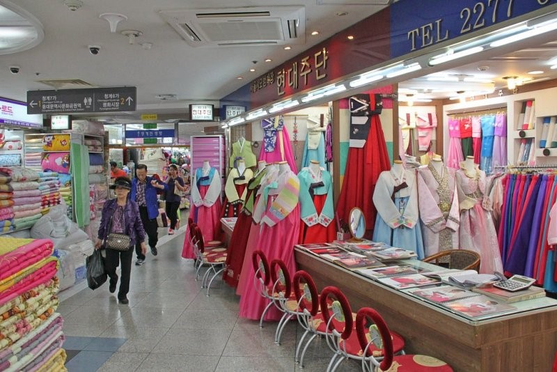
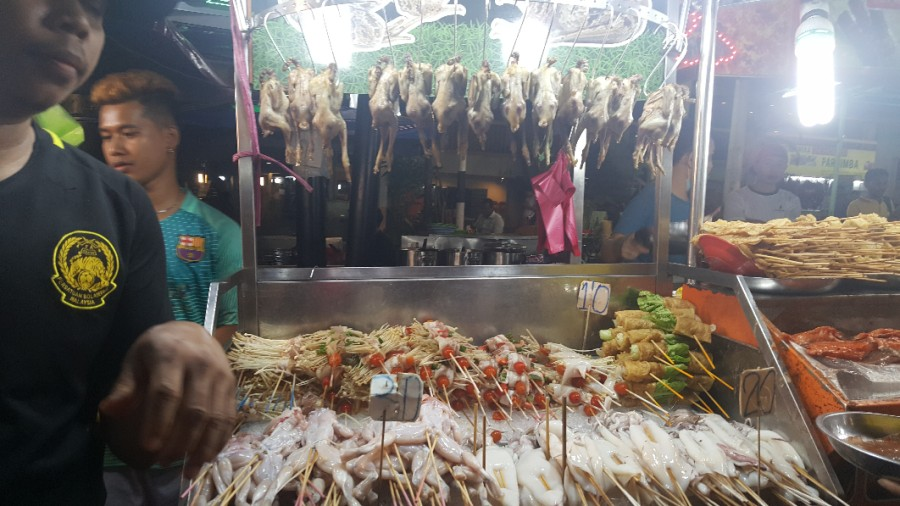
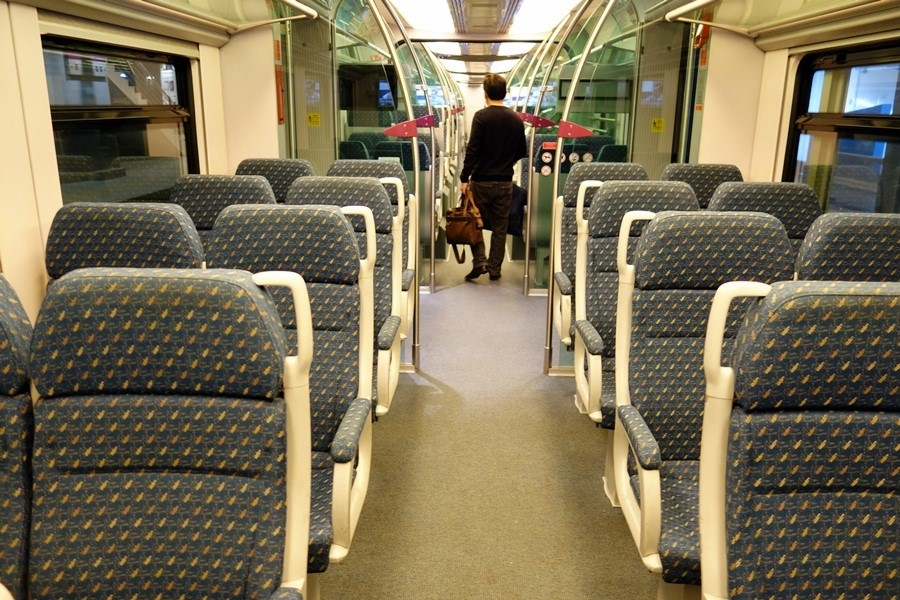
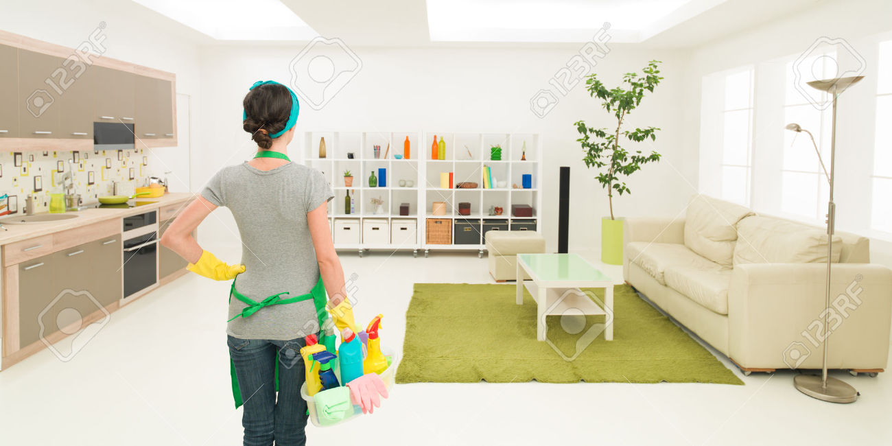

[Shopping]  -The Pavilion is the most recent shopping center in Kuala Lumpur. It sells imported foreign brands, luxury goods and high-end brands, which are difficult to see in Korea. The shopping center has 1 floor underground and 7 floors above ground and has about 430 shops. Couture Pavillion mainly sells designer brands and imported clothing, and also sells furniture, household goods, and electronics. There are also spas, skin clinics, bars, cafes and bistros, so you can enjoy entertainment and relaxation according to your preferences. For example, such a site.[*] www.pavilion-kl.com
[Meals]  -Bukit Bintang is surrounded by open-air markets and restaurants. Jalan Alo Street Jalan Alo Food Street is a popular alleyway crowded with people until late at night. It is a popular place for tourists as well as locals, and you can enjoy local food at affordable prices on a row of tables on the road. In addition, there are a lot of healthy foods, so the elderly are suitable for eating. For example, such a site.[*] www.foodpanda.my
[Personal care] -When you get older, you have hypertension, diabetes, dyslipidemia, etc. It is important to manage these diseases well for vascular health. You also need to continue exercising for your age. It is recommended that you eat a lot of food while eating a light meal, and plenty of foods such as vegetables and seaweed, which are rich in fiber, instead of fatty foods. Especially if you have other risk factors for your vascular health, such as smoking, drinking, and family history. For example, such a site.[*] www.watsons.com.my
[Healthcare] -Malaysia operates medical device licensing and approval procedures based on the medical device technology established in 2012, and it is divided into three categories as manufacturer, conformity assessment agency, and regulatory authority to grant permission and responsibility for medical devices. For example, such a site.[*] www.ecompanies.com.au
[Transportation]  -Kuala Lumpur has good public transport, so major places can be reached by using the city rail. The LRT (light rail), monorail, KTM commuter, and airport railroad are connected to the city and nearby attractions. In addition, there is a grab (taxi) service with cost-effectiveness for elderly convenience. For example, such a site.[*] www.myrapid.com.my
[Home cleaning]  -There are many home cleaning services in Kuala Lumpur. Among them, there is a home cleaning service with cost-effectiveness. For example, such a site.[*] www.kaodim.com/Maid-Services